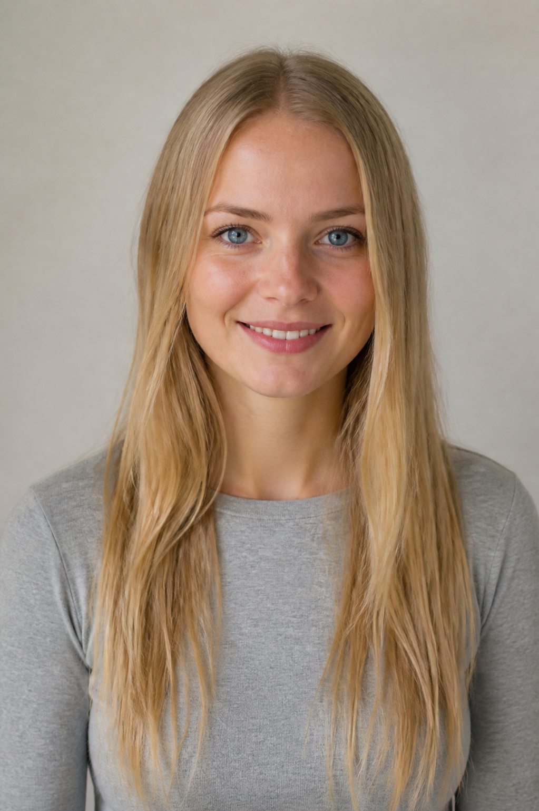
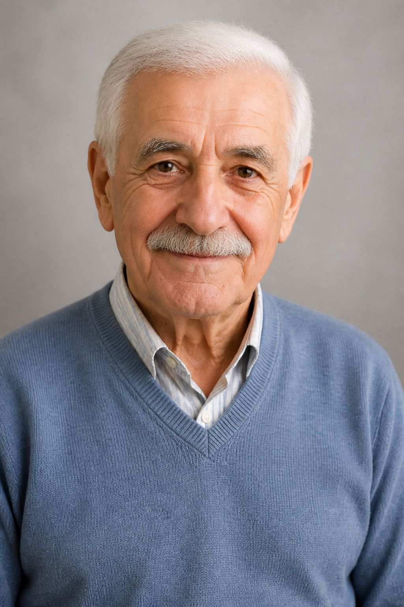

Ce vom putea face?
Recapitulăm baza A1 și adăugăm mai multe detalii într-o prezentare.
O familie într-un oraș nou
Încălzire
- Descrie persoanele din fotografii în 3–4 propoziții.
- Imaginează-ți numele, vârsta și profesia fiecărei persoane.
- Ce spui când cunoști un vecin nou?
Date personale și profesii
Apasă pe fiecare cartonaș pentru a vedea un exemplu.
Expresii utile
| Întrebare | Răspuns posibil |
|---|---|
| Cum vă numiți? | Mă numesc Radu Popescu. |
| De unde sunteți? | Sunt din Brașov, dar locuiesc în Cluj. |
| Cu ce vă ocupați? | Sunt inginer. Lucrez la o firmă de construcții. |
| Ce limbi vorbiți? | Vorbesc română, engleză și puțină germană. |
| Aveți copii? | Da, avem o fiică și un fiu. |
| Ce vă place să faceți? | Îmi place să citesc și să călătoresc. |
Fotografii: descrie trei persoane

Ana

Paul
Irina
Alege o persoană. Imaginează-ți: vârsta, naționalitatea, profesia, orașul și limbile vorbite.
Verbe și pronume personale
Formele de bază de care avem nevoie când ne prezentăm.
a fi
a avea
a locui
a lucra
Eu, el/ea și noi
| Despre mine | Despre altă persoană | Despre familie |
|---|---|---|
| Eu sunt arhitect. | El este medic. | Noi suntem din Brașov. |
| Eu am 42 de ani. | Ea are 20 de ani. | Noi avem doi copii. |
| Eu locuiesc în Cluj. | El locuiește în Cluj. | Noi locuim în centru. |
Familia Popescu se prezintă
Citește textul, apoi ascultă dialogul.
Un început nou
Familia Popescu este din Brașov, dar acum locuiește în Cluj. Radu are 43 de ani și este inginer. Soția lui, Elena, are 41 de ani și este farmacistă. Ei au doi copii: Mara și Andrei. Mara are 20 de ani, este studentă și vorbește engleză și franceză. Andrei are 16 ani, este elev și îi place fotbalul.
Familia ajunge la noul apartament sâmbătă dimineața. În hol îl întâlnește pe domnul Ionescu, un vecin. Radu se prezintă și îi prezintă familia. Domnul Ionescu le urează bun venit în Cluj.
Dialog la prima întâlnire
Exerciții interactive
Primești feedback imediat.
1. Alege varianta corectă
2. Completează cu forma corectă
3. Cine este?
Are 43 de ani și este inginer.
Răspuns:
Este studentă și vorbește franceză.
Răspuns:
Prezintă-te și prezintă pe cineva
Lucrează în perechi. Schimbați rolurile.
Interviu de 2 minute
Întreabă: nume, origine, oraș, profesie, limbi, familie și pasiuni.
Prezentarea colegului
Spune clasei 5–7 propoziții despre colegul tău. Folosește el/ea.
Vecin nou
Un student este noul vecin. Celălalt îl salută, se prezintă și pune trei întrebări.
Familia imaginară
Alege fotografia de familie. Dă fiecărei persoane un nume, o vârstă și o profesie.
Profilul meu A2
Scrie 70–90 de cuvinte.
Prezintă-te: nume, vârstă, țară și oraș, profesie, familie, limbi vorbite și două activități preferate. Folosește cel puțin o dată verbele a fi, a avea, a locui, a lucra.
Înainte să trimiți
Mini-test de final
5 întrebări · un punct pentru fiecare răspuns corect.
Rezolvă toate întrebările.